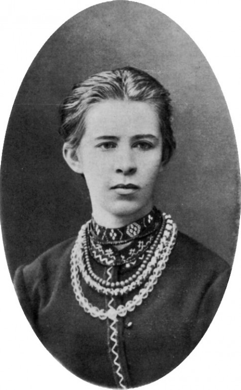

1871 – народилася Леся Українка, поетеса
1871, 25 лютого в Новограді-Волинському в родині дійсного статського радника, мецената, члена «Старої громади» Петра Косача та Ольги Драгоманової-Косач (письменниці Олени Пчілки) народилася відома поетка, драматургиня, перекладачка і громадська діячка Лариса Косач, що увійшла в історію української і європейської літератури під іменем Леся Українка.
Лариса була другою із шести дітей Косачів. Батько і мати Лесі походили зі шляхти: Петро Косач – із заможного українсько-козацького шляхетства, яке мало власний герб і після ліквідації Гетьманщини отримало права російського дворянства, а Олена Пчілка – із роду Драгоманових, що належав до козацької старшини.
Навчання отримала переважно домашнє. Спочатку навчалася за програмою матері (Олена Пчілка взагалі принципово до 5-го класу вчила своїх дітей вдома, українською мовою, остерігаючись, щоб російська школа їх не зіпсувала), пізніше окремі вчителі приходили до неї додому, бо через туберкульоз кісток, який діагностували в десятилітньому віці, Леся тривалий час була прикутою до ліжка.
Попри це, Леся Українка досконало вивчила з десяток мов, серед яких були французька (французькою володіла краще, ніж російською), німецька, англійська, італійська, польська, болгарська, а також латина і грецька. В Єгипті почала вчити іспанську. Перекладала Байрона, Шекспіра, Гоголя, Міцкевича, Гейне, Гюго, Гомера. У 19 років написала для сестер підручник «Стародавня історія східних народів».
Через хворобу (а точніше – через потребу постійного лікування) Леся Українка об’їздила всю Європу, довгий час жила в Італії та Єгипті, три роки прожила в Криму, в Ялті. Любила бувати в театрі та опері (відвідала майже всі найкращі європейські театри), прекрасно розбиралася в європейському мистецтві, скрізь записувалася до найкращих бібліотек, цікавилась новинками літератури та науковими працями. Критикувала «народництво» і всіляко просувала європейські тенденції в українську культуру, стала однією з провісників модернізму в українській літературі.
Леся Українка разом з Оленою Пчілкою, Наталею Кобринською, Ольгою Кобилянською та іншими письменницями мала величезний вплив на розвиток феміністичної течії в українській літературі. Її жіночі образи – вільні у своєму виборі, самодостатні, горді і незалежні, що для того часу було абсолютним викликом, особливо на теренах Російської імперії. Друкувалася на сторінках започаткованого в 1887 році жіночого альманаху «Перший вінок», біля витоків якого стояли Наталя Кобринська та Олена Пчілка. Підтримувала емансипацію та жіночі рухи, які виступали за більші можливості для жіночої самореалізації.
У 1888 році разом з братом Михайлом стала співорганізатором літературного гуртка української молоді «Плеяда». Серед членів гуртка були Людмила Старицька, Володимир Самійленко, Іван Стешенко, Агатангел Кримський, Максим Славінський, Олександр Черняхівський та інші.
Леся не лише писала власні твори, але й активно займалася перекладами, адаптуючи європейську класику до українського читача. На той час українська література, яка була переважно сконцентрована на зображенні села, зіткнулася з проблемою нестачі слів для збільшення образності. Тому українська інтелігенція взялася за модернізацію української мови. Зокрема, Лесі Українці ми завдячуємо слів «промінь», «напровесні», Олена Пчілка ввела в лексикон українців слова «палкий», «мистецтво», «переможець», «нестяма», а Михайло Старицький подарував нам такі слова, як «мрія», «майбутнє», «байдужість», «завзяття», «темрява», «страдниця» та ін.
Все її життя було боротьбою: з хворобою, із суспільними догмами, за право бути українкою, мати власну думку, жити своїм розумом, не бути ні від кого залежною. Іван Франко назвав Лесю Українку «єдиним мужчиною в нашому письменстві».
Останні роки прожила в Єгипті та різних містах Грузії, куди переводили по службі її чоловіка, Климента Квітку. Померла 1 серпня 1913 року в грузинському селищі Сурамі – виснажені хворобою, у неї відмовили нирки. Похована у Києві на Байковому кладовищі біля батька та брата Михайла. До кладовища труну з тілом Лесі Українки несли шестеро жінок.
Оформлення вітальні. Які м'які меблі краще вибрати?
Вітальня – це основна кімната у кожному будинку. Саме вона служить для
прийому гостей, проведення часу всією сім'єю та просто для відпочинку
у приємній теплій атмосфері. Оформляючи свій будинок та вітальню
зокрема, всі намагаються зробити її максимально зручною, комфортною та
красивою. Основним та центральним елементом оформлення вітальні, як і
будь-якої іншої кімнати, є м'які меблі.
Будь-які меблі для вітальні повинні бути не тільки стильними і
красивими, але і функціональними. На таких меблів має бути зручно та
приємно відпочивати та приймати гостей. Однак сьогодні існує величезна
різноманітність найрізноманітніших м'яких меблів для вітальні, яка
підходить для кімнат різних розмірів і форм. На чому варто зупинити
свій вибір? Як краще оформити свою вітальню, щоб вам було комфортно, а
гості хотіли приходити до вас знову та знову?
На сайті інтернет магазину Кровато представлено велику різноманітність м'яких меблів для вітальні, серед яких кожен зможе вибрати для себе найбільш вдалий варіант. У нас ви знайдете:
- Прямі дивани. Такі дивани вважаються класикою. Вони підходять для віталень будь-яких форм та розмірів. Прямий диван виглядає стильно та лаконічно, на ньому зручно відпочивати, приймати гостей або навіть спати. Прямі дивани можуть стояти біля стіни, так і в центрі кімнати. Багато моделей прямих диванів легко розкладаються, перетворюючись на повноцінне спальне місце. Також більшість диванів мають великі та місткі ніші, які є додатковим місцем для зберігання;
- Кутові дивани Кутові дивани вважаються найзручнішими та комфортнішими. Вони ідеально підійдуть для приємного проведення часу в колі сім'ї або друзів. Кутові дивани в основному використовуються для оформлення великих віталень, так як вони займають багато місця, і для кімнат з невеликою площею просто не підійдуть;
- Тахти. Тахта - це одна з варіацій дивана, але стильніша і мінімалістична. Виглядають тахти дуже незвично і можуть підійти для будь-якого інтер'єру. Також тахти більше ніж звичайні дивани підходять для сну, оскільки в їх основі не пружинні блоки, а дерев'яні ламелі або ортопедичні матраци;
- Крісла. Крісло – це особливий предмет інтер'єру. Сучасні дизайнери не часто використовують його, вважаючи застарілим, проте саме крісла створюють особливий затишок та комфорт у будь-якій кімнаті. Сьогодні існує величезна різноманітність класичних та сучасних моделей крісел, що дозволяє кожному відшукати ідеальне крісло для свого будинку;
- Набір меблів. Комплект м'яких меблів – це відмінне рішення для тих, хто хоче меблювати свою вітальню не лише диваном, а й кріслами. Існують набори з одним або двома кріслами, із прямими або кутовими диванами. Основна перевага будь-якого готового меблевого гарнітура – це те, що предмети меблів у ньому ідеально поєднуються один з одним, і вам не потрібно буде витрачати свій час та сили на їхній підбір.
Підбір м'яких меблів для вітальні – це заняття непросте. Однак при виборі та покупці меблів для своєї вітальні пам'ятайте, що якісні м'які меблі повинні бути не тільки красивими, але й зручними для вас і всіх мешканців вашого будинку.
Як правильно обрати ліжко?
При виборі ліжка в інтернет магазині Вам в першу чергу потрібно вибрати матеріал. Найбільшою популярністю користуються дерев'яні ліжка, виготовлені з вільхи, ясена чи дуба. Такі моделі чудово прикрасять Вашу спальню у квартирі чи приватному будинку. Для орендованих квартир, під здачу, більше підійде ліжко з металу, так як
Для Вашої зручності ліжко може комплектуватись висувними ящиками або підйомним механізмом. Ящики можуть бути з одного боку ліжка або з двох. Також є моделі, з висувними ящиками спереду. Ліжка з підйомним механізмом, це відмінне рішення, для невеликих кімнат, вони дозволяють заощадити простір і мають велику нішу для зберігання постільної білизни. Всі дерев'яні ліжка комплектуються буковими ламелями. Спальне місце з ламельною основою може витримувати навантаження до 150 кг на одне спальне місце. Відстань між ламелями, у своїй має бути 2,5-3 див.
Кожне ліжко може бути забарвлене у різні кольори: чорні, білі, сірі, венге, у кольорі горіх. Завдяки цьому ліжко можна підібрати під будь-який інтер'єр.